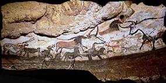
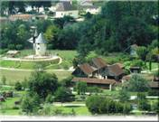

Bulletin N° 27
Juillet 2009
LA VALLEE DE LA VEZERE
SUR LES PAS DE CRO-MAGNON SAMEDI 10 OCTOBRE 2009
Prix de la journée 43 euros par personne
Départ de Toulouse à destination du département de la Dordogne
(Parking magasin de jouets Toy's Carrefour Portet) heure à préciser

Arrivée à Montignac : Lascaux II, visite du fac-similé , situé à 200 mètres de la grotte originale. Les deux galeries reproduites rassemblent la majorité des peintures de Lascaux. Dans le musée est retracé l'histoire de la grotte et expliquent les techniques des artistes. Ainsi grâce à son double, le plus célèbre « sanctuaire » paléolithique du monde peut renaître à la vue du public. La visite du « THOT, ESPACE CRO MAGNON » en sera un complément indispensable.
Continuation en direction des Eyzies : capitale mondiale de la préhistoire, temps libre pour découvrir le site de ce village blotti au creux de la « Vallée de l'Homme » ses nombreuses grottes ornées et le foisonnement des abris sous roche�

Poursuite en direction du Village du Bournat : déjeuner avec animation musicale.
L'histoire vivante du Périgord. Ce site né de la passion, est devenu l'un des premiers sites du Périgord et vous promet de bons moments quels que soient votre âge et vos centres d'intérêts. Rajeunissez de cent ans ! Visite guidée du site . Les artisans travaillent toute l'année et vous font partager leur art. L'huile de noix et le pain de campagne sont fabriqués sous vos yeux. Une fête foraine d'il y a 100 ans vous y divertira�
Retour en direction de Toulouse en début de soirée.
*************************************************************************************
BULLETIN D'INSCRIPTION JOURNEE DU SAMEDI 10 OCTOBRE 2009
VALLEE DE LA VEZERE
A retourner avant le 7 septembre 2009
NOM ��������������PRENOM ����������..Tél��������.
ADRESSE������������������������������������...
Nbre de participants :
Vous pouvez aussi réserver par téléphone :
• sur le répondeur AZF du 05 62 11 45 50
Ou auprès de Michelle AUZER au 06 76 84 21 77
Votre inscription ne sera définitive qu'à réception du chèque adressé à AZF-MEMOIRE et SOLIDARITE. Aucun remboursement ne sera effectué.
__________________________________
Page 1 : Le Mot du Président
Page 2 : Mémorial - Décès
Page 3 : Compte rendu sortie 06/06/2009
Page 4 :Inscription sortie Cro-Magnon
Page 5 :Mé Lo Di, Journée pétanque
Page 6 :Activités
Page 7 :Activités
Page 8 :Commémoration, renseignements
Page 9 :Plaidoirie Maître Forget
_________________________
RAPPEL : permanences tous les mardis de 10 à12h
Téléphone / répondeur : 05 62 11 45 50
Adresse é-mail : azf-ms@wanadoo.fr
Adresse postale : AZF 143 route d'Espagne
31100 Toulouse
|